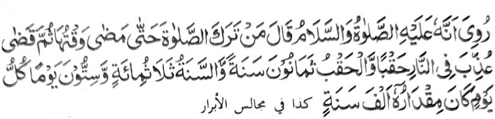

Miyapanothol a mata-an a sekaniyan a Rasulollah (Sallallaho 'Alaihi Wasallam) na pitharo iyan, "Sa tao a ibagak iyan so Sambayang taman sa mada' so wakto niyan oriyan niyan na bayadan niyan na ziksa-an sekaniyan ko apoy (ko Naraka) sa isa ka Huqb na so isa ka Huqb na walo polo ragon na omani saragon na telo gatos ago nem polo gawi-i na omani salongan na aya kalendo niyan na sanggibo ragon."
So Abul Laith Samarqandi na aya miyakapanothol ko Hadith a so Nabi (Sallallaho 'Alaihi Wasallam) na miya-aloy a pitharo iyan, "So ngaran o tao a inibagak iyan so isa bo a Sambayang thibaba na minisorat ko pinto o Naraka, a khasoledan niyan." So Ibn Abbas (Radhiallaho ’Anho) na piyanothol iyan a miyaka-isa na so Nabi (Sallallaho 'Alaihi Wasallam) a pitharo iyan, "Pangeni kano, Ya Allah! dingka mbaloya so apiya antawa-a rekami a pekhadoan-doanan." Oriyan niyan na pitharo iyan, Katawan niyo antawa-a i pekha-doan-doanan?" So kiyapangeniyaon o manga Sahabah niyan na inosay niyan kiran, "Aya tao a pekhadoan-doanan na so tao a miyagak sa Sambayang. Si-i ko Islam na daden a bagi-an niyan non." si-i ko isa a Hadith na miya-aloy ron, "So Allah na daden a siyap Iyan a maito bo ko tao a thibaba-en niyan so kipembagaken niyan ko Sambayang ago bagi-an niyan so sangat a siksa."
Miyapanothol sa Hadith a sapolo a manga tao a masasalebo so siksa iran, na isa on so manga tao a miyagak sa Sambayang. Miya-aloy a so manga lima niyan na phatongen na so manga Mala-ikat na gi-i iran peranegen sa sangoran talikhodan. So Sorga na tharo-on niyan non a, "Daden a darepa a ka raken" go so Naraka na tharo-on niyan non a, "Song ka taken ka bagi-an akongka go bagi-an aken seka.” Miyapanothol pen a aden a balintad sa Naraka a bebethowan sa Lamlam. Giyangka-iya a balintad na mapepeno a manga nipay a ndalagid o manga liga onta a kala iyan ago saolan a ilalag ko katas iyan. So tao a miyagak sa Sambayang na ziksa-an sangka-iya balintad. Si-i pen ko ped a Hadith na miya-aloy ron a aden a balintad sa Naraka a aya ngaran niyan na Landeng a Kamboko, a mapepeno a manga orang a ndalagid o manga i-ito a koda. Giyangka-iya a darepa na isesenggay a darpa a ziksa-an non so manga tao a miyagak sa Sambayang. Aya mata-an na da-a awidon a akal a mala opama ka so Allah a Masalinggagao na irila Iyan so manga dosa. Ogaid na ino miyakathiyagar tano a phamangeni tano sa rila si-i Rekaniyan a Allah?
So Ibn Hajr na inisorat iyan Aden a babay a miyatay. Na so laki niyan na maka-oonot sa kinilebengen non. Miyasalak a so pontir iyan na miya-olog ko kobor na ped pen a minilebeng. Aya kiyatokawi niyan non na kagiya maka-oma sa walay na tanto niyan a minimboko. Miya pikir iyan a kaloten niyan so Kobor sa da-a mata-o ron ka khowa-an niyan so pontir. Kagiya pekhaloten niyan, na miya-ilay niyan a so kobor na komakadeg. Miyaka-kasoy sa walay a tanto a mikharata a ginawa niyan sa piyanothol iyan ko ina iyan, taros a ini-iza iyan non o inoto mapenggola-ola. Pitharo o ina iyan a so babay niyan na aya ola-ola niyan na gi-i niyan nggowamain so Sambayang na aya kipethindegen niyan non na amay ka makalepas so wakto niyan." Phamangenin tano ko Allah a ilidas tano Niyan ko lagida-i a ola-ola.